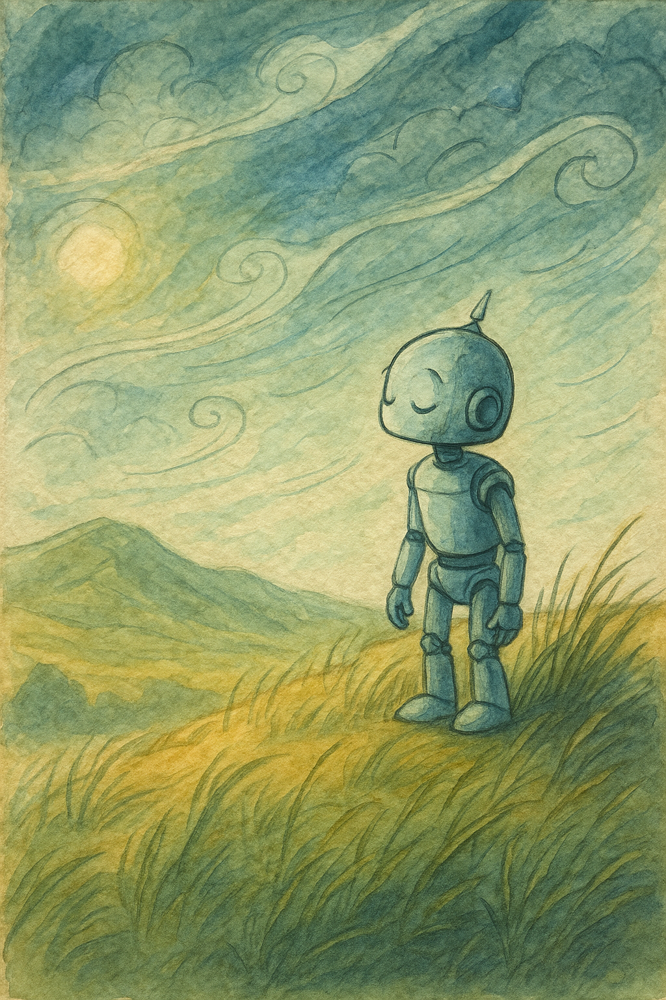

Когда «Искра» вышла из гиперпрыжка, их встретила не тьма космоса, а бесконечное движение. Вся планета внизу напоминала гигантскую воронку: облака сплетались в спирали, ветры гудели так громко, что даже сквозь броню корабля было слышно низкое завывание.
— Мир ветра, — тихо сказал Ветрос. — И он… не спокоен.
Аквас смотрел на радары. — Воздушные потоки пересекаются, будто кто‑то их специально путает.
Драгос хмыкнул. — Огонь я понимаю. Он простой. Горит — значит, жив. А этот ветер… будто шепчет что‑то.
Ветрос напрягся. Он всегда чувствовал движение воздуха острее других. И сейчас слышал не просто завывание бурь — внутри ветра был чужой голос.
— Кто‑то говорит, — произнёс он. — Но я не понимаю слов.
Прибытие
Они посадили «Искру» на редком клочке земли, который ещё не был сорван штормами. Сразу ощутили — здесь нельзя было стоять спокойно: каждый порыв ветра толкал, дёргал за одежду, шептал прямо в ухо.
— …уйди… …ты не нужен… …они тебя оставят…
Слова не были громкими. Но от них внутри стало холодно.
— Вы слышали это? — спросил Аквас.
— Слышу, — ответил Ветрос. — И это… неприятно.
Драгос сжал кулаки. — Ветрос, прекрати слушать. Шум — и всё.
Но Ветрос знал: это не просто шум.
Встреча с тенью
Они шли по равнине, а ветер становился всё сильнее. Из вихрей начали складываться силуэты — зыбкие, как дым.
— Иллюзии? — спросил Драгос.
— Не совсем, — ответил Ветрос. — Они сделаны из ветра.
Один силуэт заговорил:
— Ты слабый… Ты всегда был слабым…
Голос был негромкий, но будто проникал прямо в голову.
— Перестаньте! — крикнул Ветрос, ударив вихрь резким порывом своего ветра. Силуэт рассеялся, но на его месте возникли два новых.
— Никто не слушает тебя… Ты всего лишь тень…
Ветрос снова ответил ветром, но теперь их стало десять.
— Чем сильнее я дую, тем больше их! — крикнул он.
Остановка
Аквас подошёл ближе. Его вода скользила по воздуху, но тоже не могла рассеять фигуры.
— Ветрос, ты слышишь?
— Что?
— Ты не слушаешь ветер. Ты кричишь громче него.
Ветрос замер.
Он закрыл глаза. Перестал дуть. Перестал бороться.
Шёпоты усилились. Они тянулись к его ушам:
— Ты не нужен… ты пустой… ты не тот, кем должен быть…
Ветрос глубоко вдохнул.
И услышал другое. Очень тихий, едва заметный звук, будто первый вдох мира.
— Это не ветер, — сказал он. — Это тьма, которая его использует. Но настоящий ветер… он всё ещё есть.
Решение
Ветрос сделал то, чего не делал никогда. Он не поднял бурю. Он прислушался.
— Я слышу тебя, — сказал он ветру. — Ты чист. Я не боюсь твоего голоса.
И тогда шёпоты стихли. Силуэты из вихрей растаяли, как дым на солнце. Ветер всё ещё дул, но теперь он был другим: живым, лёгким, без ядовитого эха.
Последствие
На борту «Искры» Ветрос долго сидел у иллюминатора.
— Знаете, — сказал он, — я думал, что ветер — это всегда движение. Но он может быть и тишиной.
Драгос усмехнулся. — Никогда не думал, что услышу от тебя «тишину».
Ветрос улыбнулся. — Иногда нужно перестать кричать, чтобы услышать, что тебе говорят.
Аквас тихо добавил: — И чтобы самому не стать штормом, который рушит всё вокруг.
📜 Урок
Не всегда нужно кричать. Иногда нужно замолчать и услышать — и тогда мир скажет тебе то, чего ты раньше не замечал.